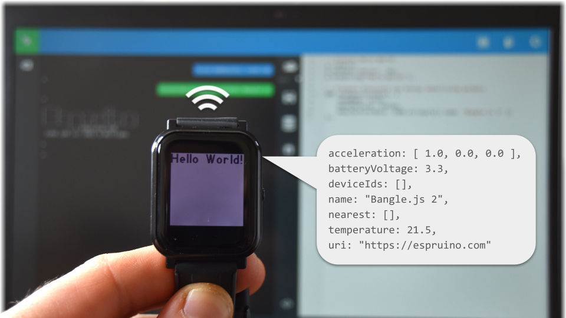
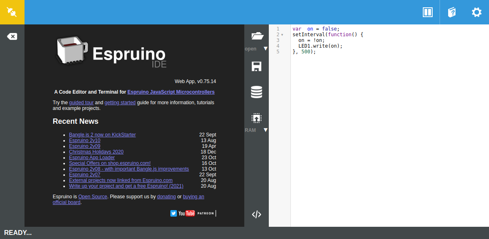
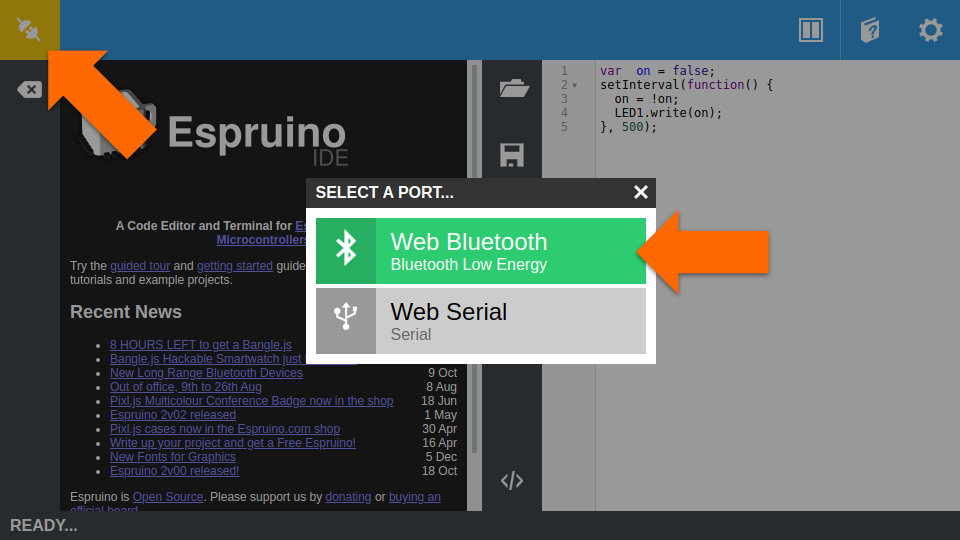
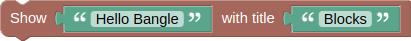
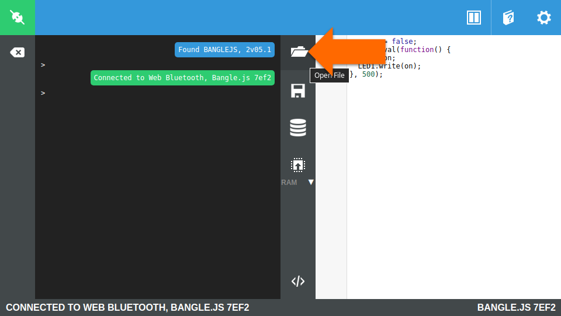
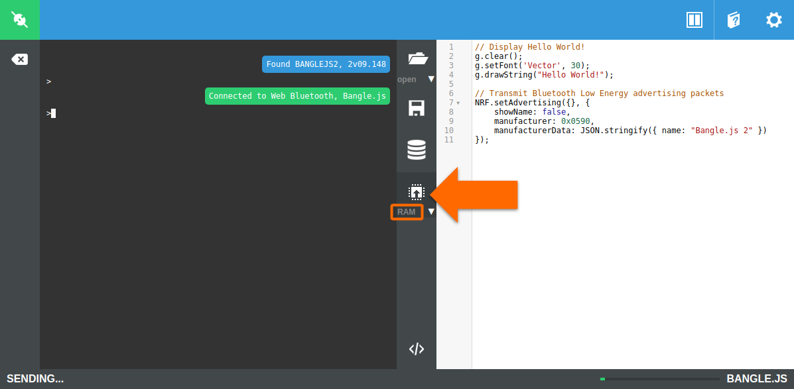
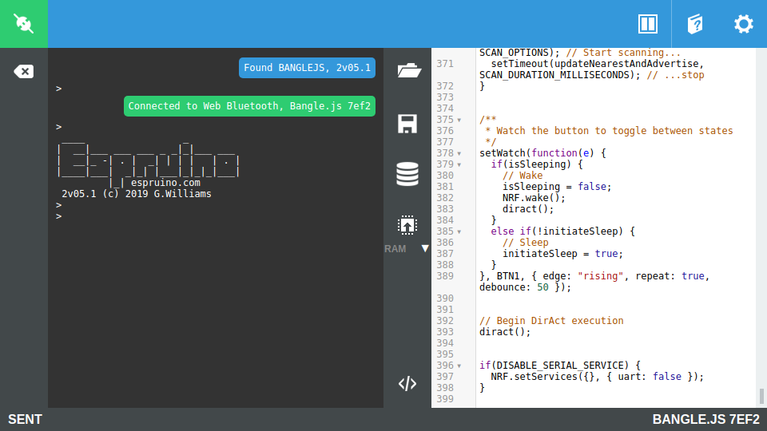
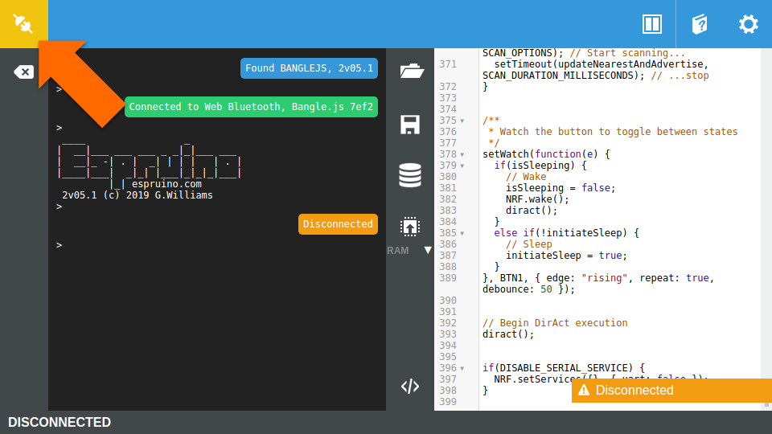

Develop BLE applications with Bangle.js
Our step-by-step guide to program the open smartwatch for wireless sensing and identification applications.
The TL;DR (Too Long; Didn't Read)
Learn how to program Bangle.js with existing or custom code.
- What will this accomplish?
- The Bangle.js will share its sensor data and/or identifiers wirelessly using Bluetooth Low Energy (BLE) advertising packets.
- Is there an easier way?
- Check out the app loader and the official Bangle.js Getting Started guide.
- So why would I read this?
- To learn how to program the Bangle.js in JavaScript for BLE applications.
Prerequisites
A Bangle.js and Web Bluetooth.
-

Buy a Bangle.js from the Espruino Shop
Support the ongoing development of Espruino software and devices! open source!
Many—but not all—modern browsers such as Chrome support Web Bluetooth by default. MDN maintains this list of browser compatibility.
Connecting to the Bangle.js Step 1 of 2
Browse to the Espruino IDE and connect using Web Bluetooth.
- What's Espruino?
- Espruino enables low-power microcontrollers to run JavaScript, the language of the Web.
- What's Web Bluetooth?
- Web Bluetooth provides the ability to connect and interact with Bluetooth Low Energy devices from a web browser.
Browse to the Espruino IDE Part 1
Point a web browser to https://espruino.com/ide/
Connect with Web Bluetooth Part 2
Click on the Connect/Disconnect icon at top left, and then select Web Bluetooth from the popup.
Pair with the Bangle.js Part 3
Identify and select the Bangle.js from the list of scanned devices, then click Pair.
If the desired Bangle.js does not appear, check the following:
- is it powered on?
- is it in range of the computer?
- is it connectable in the Settings menu?
If pairing is successful, the Connect/Disconnect icon at top left will turn green. The Bangle.js can now be programmed wirelessly from the browser using Web Bluetooth.
Programming the Bangle.js Step 2 of 2
Load a JavaScript file and send it to the Bangle.js.
- Why JavaScript?
- JavaScript runs on almost every modern website (client-side), on many back-ends with Node.js (server-side), and lends itself well even to embedded devices.
- Any alternatives?
- The Espruino IDE provides a Graphical Editor for novices to program with blocks.
What to program?
The Bangle.js can be programmed with an existing file, or from code written in the IDE as either JavaScript or blocks.
The following files are maintained by reelyActive:
-
Espruino Apps
reelyActive GitHub repository of apps for Espruino devices. -

DirAct
Proximity identification with Bluetooth Low Energy.
Hello Bangle in JavaScript:
E.showMessage('Hello Bangle', 'JavaScript');
Hello Bangle in Blocks:
Open a file to program Part 1
Click on the Folder icon in the centre toolbar to select a JavaScript file to program the Bangle.js.
Send to Espruino Part 2
Click on the Send to Espruino button in the centre toolbar with the default option to write the file to RAM.
Confirm the program runs successfully Part 3
A few seconds after the file send begins, status messages will indicate if the file was successfully sent. At this point, the program will begin execution.
If there are errors in the program, these will appear in the console on the left side of the screen. Otherwise, the program will run in memory until the Bangle.js is reset or the menu is invoked.
Disconnect from the Bangle.js Part 4
Once the program runs successfully, disconnect from the Bangle.js by clicking the Connect/Disconnect icon at top left.
Embrace the ambient data in your space
Pareto Anywhere is open source software that runs anywhere to digitally transform any space.
Where to next?
Configure other Espruino devices, or continue exploring our open architecture and all its applications.
-

Develop BLE applications with Puck.js
Our step-by-step guide to program the open smart button for wireless sensing and identification applications. -

diyActive Home
The home for reelyActive developers.